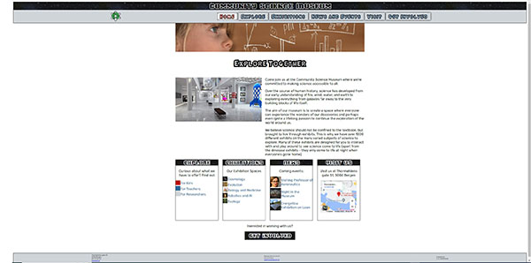
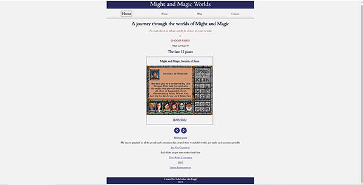

Welcome to my portfolio
About me
Name
Lola V.V. Lohne
Born
St.Petersburg, Russia
Currently live
Bergen, Norway
Work
Western Norway University of Applied Science
Department
IT
Hobbies
- CRPG
- Guitar
- Music
lola.lohne@gmail.com
GitHub
https://github.com/kaggiDo not hesistate to contact me
These are my projects
Square Eyes
Project description
Intension back Squqre Eyes is a meeting point where independent filmmakers will be able to show their films for a pay-per-view, and film enthusiasts will have access to new products that might not be available in other ways. This a web streaming service, which will give the creators opportunity to meet publicum and start earning money without large investments in advertising, as well as it will give an opportunity for viewers to satisfy their curiosity about new and alternative trends in film industry, discover new names and support film makers they like.
Community Science Museum
Project description
Community Science Museum website provides information on Museum exhibitions, address, working hours, organizing visits, coming events and possible cooperation. It will help to plan a visit, find out about new exhibitions and organize educational or extracurricular activities.
Might and Magic Worlds
Project description
A blog about Might and Magic CRPG series and playing throug all games in series in chronological order.